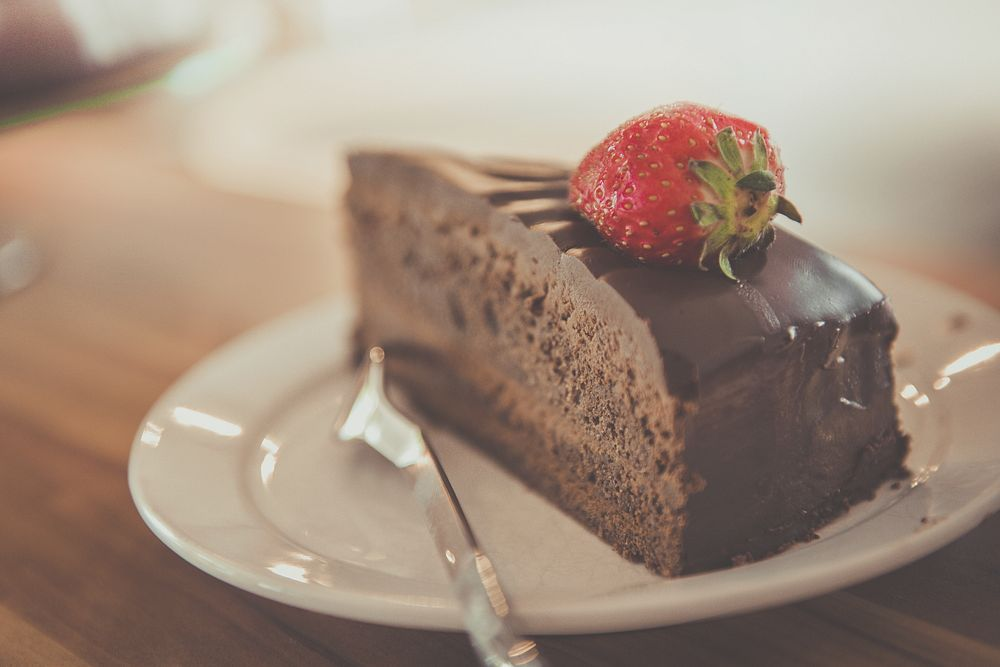

Vegan Chocolate Cake

Learn how to make a simple and very tasty vegan chocolate cake!
Ingredients
- 1 ½ cups all-purpose flour;
- 1 cup white sugar;
- ¼ cup cocoa powder;
- 1 teaspoon baking soda;
- ½ teaspoon salt;
- 1 cup water;
- ⅓ cup vegetable oil;
- 1 teaspoon vanilla extract;
- 1 teaspoon distilled white vinegar;
Steps
- Gather all ingredients.
- Preheat the oven to 350 degrees F (175 degrees C). Lightly grease a 9x5-inch loaf pan.
- Sift flour, sugar, cocoa, baking soda, and salt together in a large bowl.
- Add water, oil, vanilla, and vinegar; mix together until smooth.
- Pour mixture into the prepared pan.
- Bake in the preheated oven until a toothpick inserted into the center comes out clean, about 45 minutes.
- Serve with berries.